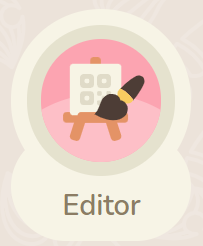
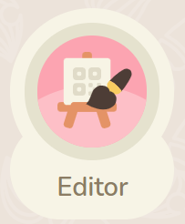

Animal Crossing Tune Maker

Create an island tune, listen to it, export as a png image.
MeteoNook

Predict your weather including meteor showers.
Nookazon

Amazon for Animal Crossing


AC Patterns


Create Patterns (Best used on desktop)